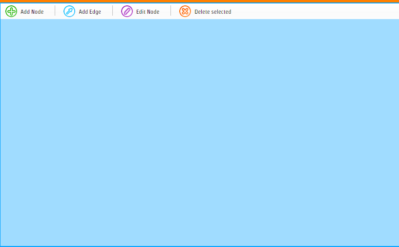
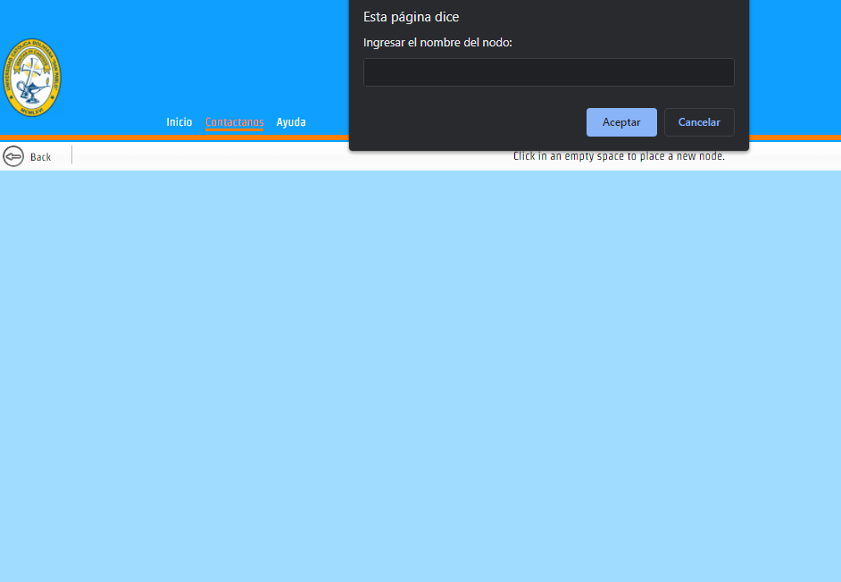
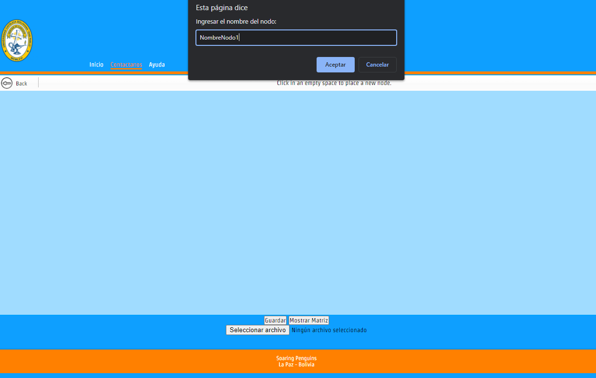
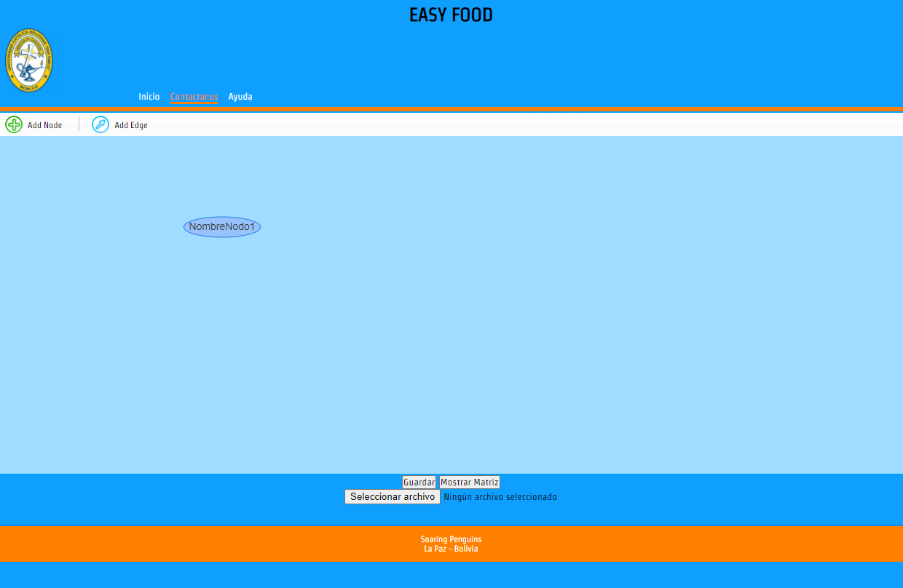
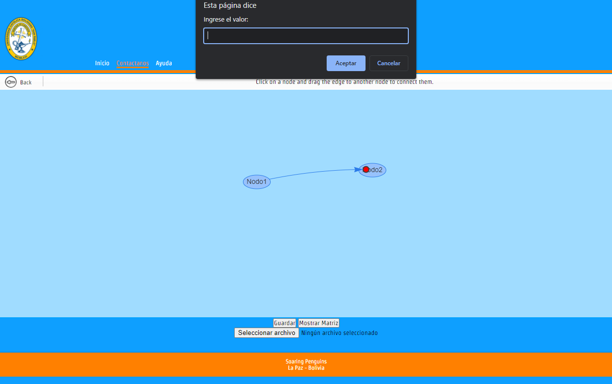
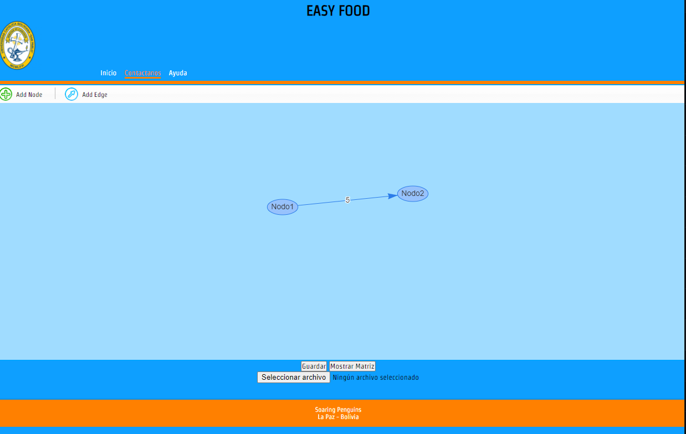

Ayuda
Agregar vértice
Para crear un grafo necesitas agregar vértices. Selecciona «Agregar vértice» y haz click en el espacio de trabajo.

Para crear un grafo necesitas agregar nodos. Selecciona «Agregar nodo» y haz click en el espacio de trabajo.

Para crear un grafo necesitas agregar vértices. Selecciona «Agregar vértice» y haz click en el espacio de trabajo.

Conectar vértices
Para conectar vértices necesitás seleccionar «Conectar vértices» y hacer click en el primer nodo y luego en el segundo nodo.



Mostrar matriz de adyacencia
Elegir «Mostrar matriz» en la pagina de grafos